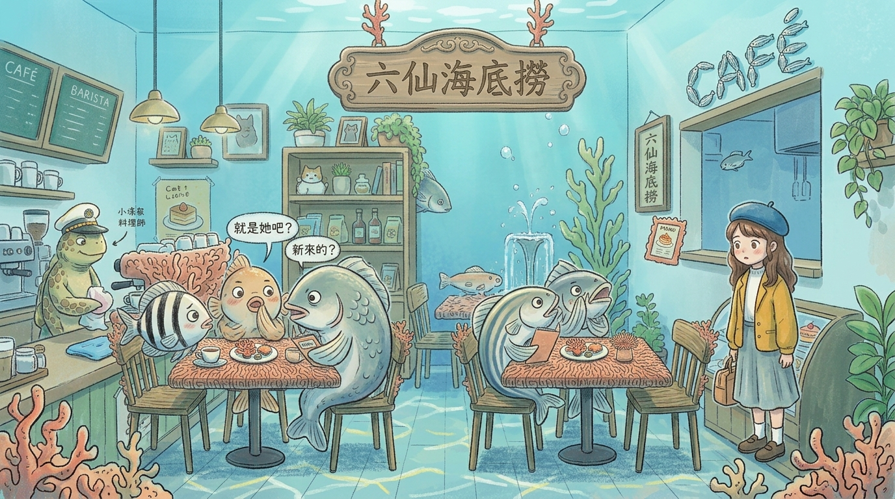
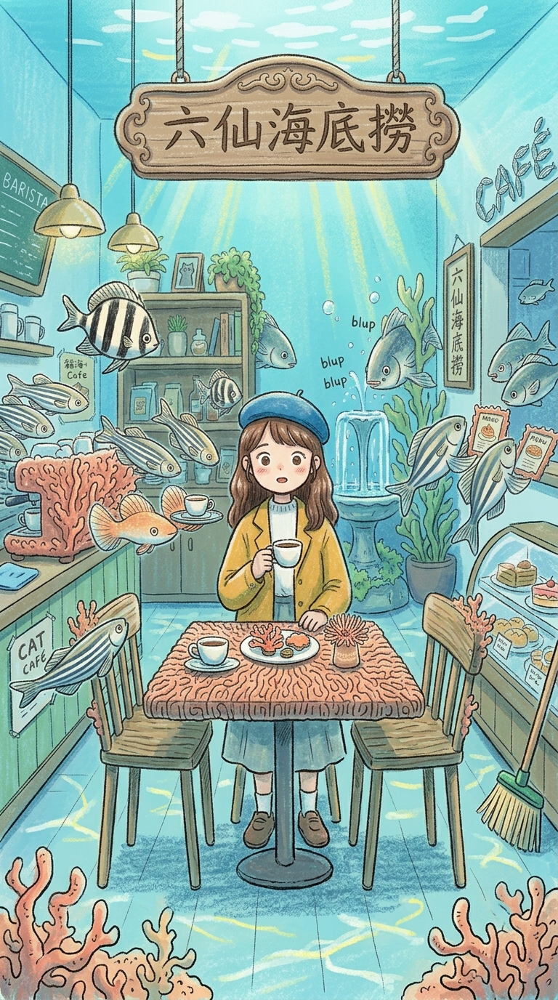
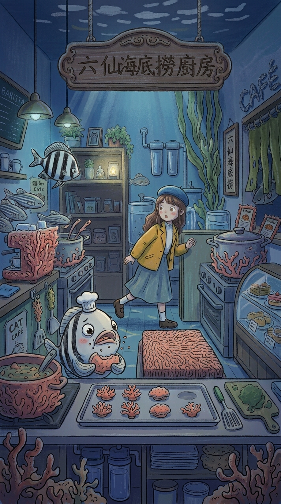
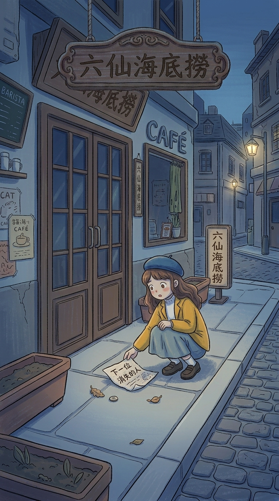
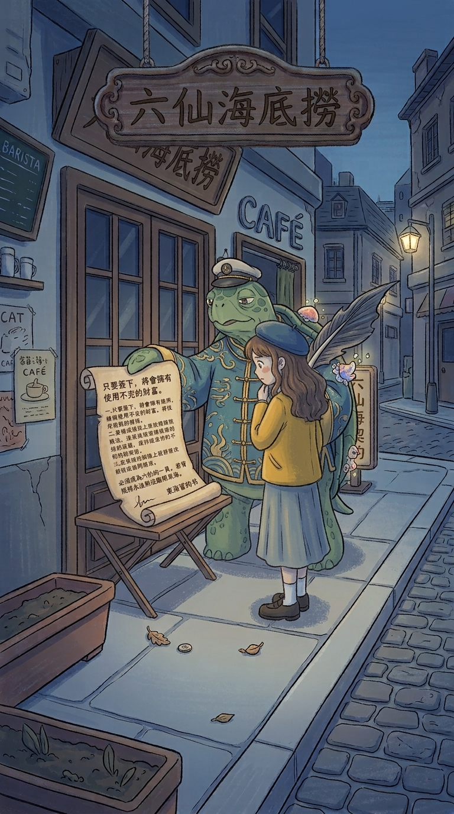
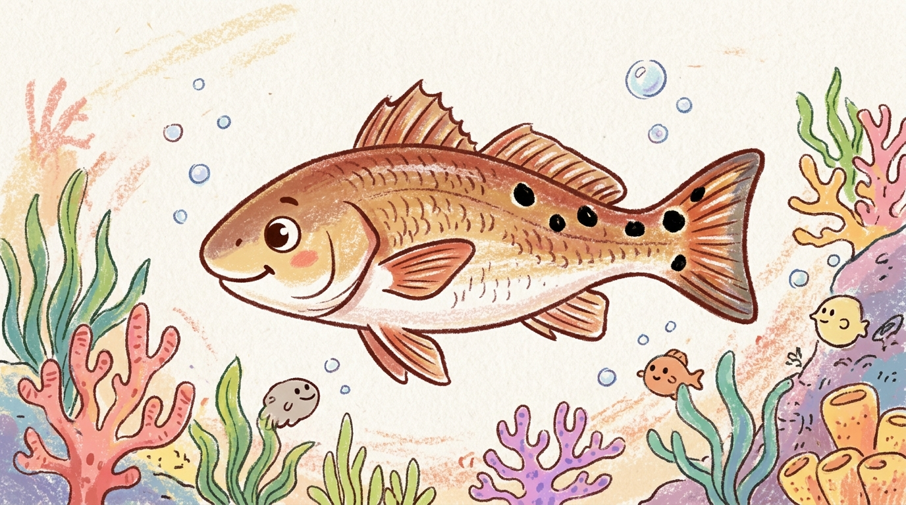
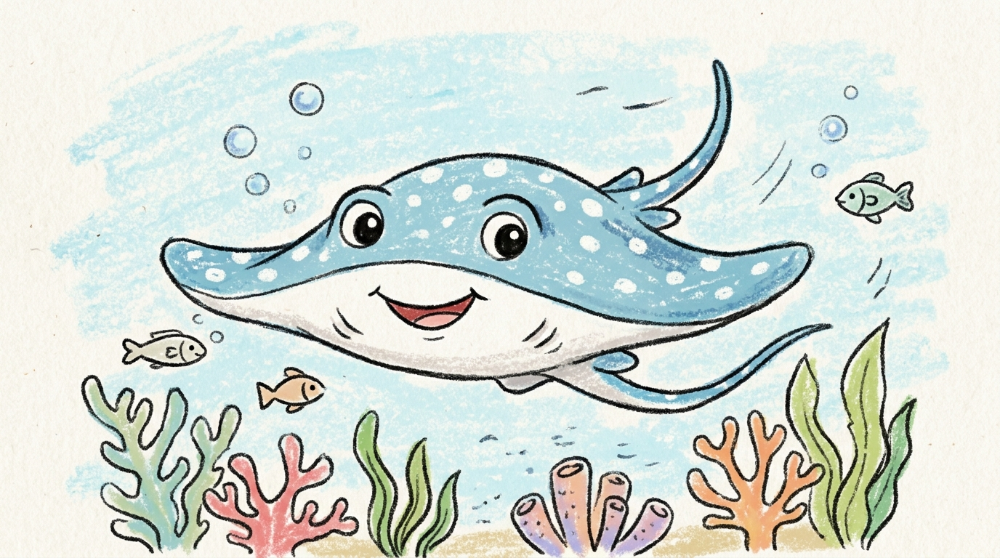
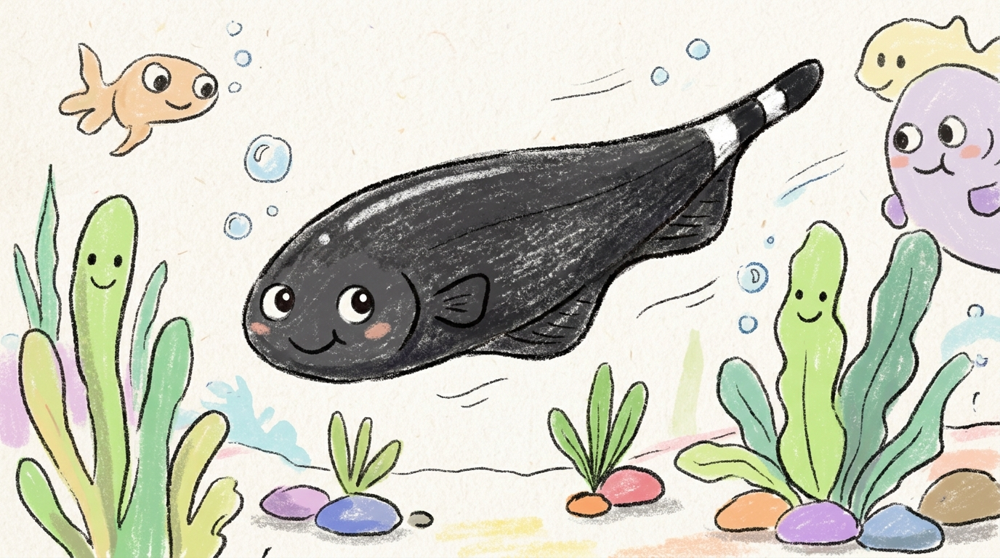
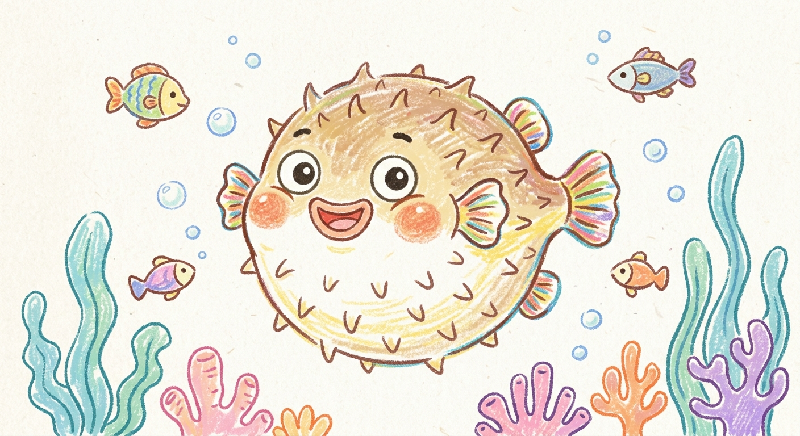

2. 你隨機找了個位置坐下。這時游過來一位戴著船長帽的海龜，他是店長，告訴你最近有人吃飯到一半突然消失。你第一個懷疑的是？
A.
直覺有外來生物入侵
B.
店內有人在惡搞
C.
老闆只是想博君一笑
D.
把問題記在心裡，私下偷偷調查
傳說八仙過海所渡的東海中藏著八仙們留下的秘密。而這天，你心血來潮想潛入那片海域，一探究竟。


主動打招呼化解尷尬
默默觀察每個人的表情
假裝冷靜但其實內心很惶恐不安
開始懷疑這件店是否有異樣
直覺有外來生物入侵
店內有人在惡搞
老闆只是想博君一笑
把問題記在心裡，私下偷偷調查

立刻通報店長
幫忙隱瞞一次，下不為例
跟著他一起偷吃食物
趁機交換這間店的情報

立刻通知大家
先確認自己名字有沒有在上面
自己偷偷暗中調查
直覺是假的，隨手一扔

沒看備註直接簽下
信任店長，直接簽下
仔細思考內容是否有詐
直接拒絕店長的邀約

存在感強，活動力高，是養殖池裡最吸睛的魚，對環境敏感，心思細膩的樂天派。

佛系交友、隨和的人設，重視雙向交流，也極需要自己的個人空間。

冷靜且敏銳，擁有清楚的判斷及洞察能力，嘴毒直率的反差系代表。

高敏感、高防備、外冷內熱的完美主義 I 人代表。